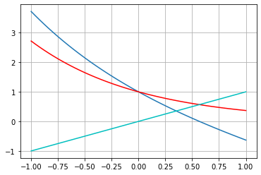

6. Método da Iteração Linear (Ponto Fixo)¶
Este notebook explora aspectos do método da iteração linear, ou também chamado de método do ponto fixo.
import numpy as np
import matplotlib.pyplot as plt
%matplotlib inline
6.1. Exemplo¶
Estudamos a função \(f(x) = x^2 + x - 6\).
x = np.linspace(-4,4,50)
f = lambda x: x**2 + x - 6
xr = np.roots([1,1,-6])
print('Raízes: x1 = {:f}, x2 = {:f}'.format(xr[0], xr[1]))
# função de iteração
g1 = lambda x: 6 - x**2
plt.plot(x,f(x),label='$f(x)$');
plt.plot(x,x,'k--',label='$y=x$');
plt.plot(x,0*x,'c-.',label='$y=0$');
plt.plot(x,g1(x),'r--',label='$g_1(x)$');
plt.axvline(-3,-5,10,color='m');
plt.axvline(2,-5,10,color='m');
plt.legend(loc='best');
Raízes: x1 = -3.000000, x2 = 2.000000
6.2. Exemplo¶
Estudamos a função \(f(x) = \exp(x) -x\)
x2 = np.linspace(-1,1,50)
f2 = lambda x: np.exp(-x) - x
g2 = lambda x: np.exp(-x)
plt.plot(x2,f2(x2),x2,g2(x2),'r',x2,x2,'c')
plt.grid(True)

6.3. Implementação do método do ponto fixo¶
def ponto_fixo(x0,f,g,tol,N,vis):
"""
Resolve problema de determinacao de raizes pelo
metodo do ponto fixo (iteracao linear).
entrada:
x0 - aproximacao inicial (float)
f - funcao a ser resolvida (str)
g - funcao de iteracao (str)
tol - tolerancia (float)
N - numero maximo de iteracoes (int)
vis - flag para plotagem (bool)
saida:
x - raiz aproximada para f (float)
"""
from numpy import linspace
from matplotlib.pyplot import plot,legend
# funcoes
f = eval('lambda x:' + f)
g = eval('lambda x:' + g)
# inicializacao
it = 0 # contador
x, xn = x0, x0 + 1 # iteradas atual, anterior
e = abs(x-xn)/abs(x) # erro
# tabela
print('i\t x\t\t f(x)\t\t ER')
print('{0:d}\t {1:f}\t {2:f}\t {3:e}'.format(it,x,f(x),e))
# laco
while e >= tol and it <= N:
it += 1
xn = x
x = g(xn)
e = abs(x-xn)/abs(x)
print('{0:d}\t {1:f}\t {2:f}\t {3:e}'.format(it,x,f(x),e))
if it > N:
print('Solução nao alcancada com N iteracoes.')
break
if vis == True:
dx = 2*x
dom = linspace(x - dx,x + dx,30)
plot(dom,f(dom),label='$f(x)$')
plot(dom,dom*0,label='$y=0$')
plot(dom,g(dom),label='$g(x)$')
plot(dom,dom,label='$y=x$')
legend()
return x
6.4. Estudo de caso: \(f(x) = x^2 + x - 6\)¶
Função de iteração: \(g(x) = \sqrt{6 - x}\)
f = 'x**2 + x - 6'
g = '(6 - x)**(1/2)'
x0 = 0.1
tol = 1e-5
N = 100
ponto_fixo(x0,f,g,tol,N,True)
i x f(x) ER
0 0.100000 -5.890000 1.000000e+01
1 2.428992 2.328992 9.588307e-01
2 1.889711 -0.539280 2.853771e-01
3 2.027385 0.137674 6.790695e-02
4 1.993142 -0.034243 1.718024e-02
5 2.001714 0.008572 4.282174e-03
6 1.999572 -0.002142 1.071346e-03
7 2.000107 0.000536 2.677864e-04
8 1.999973 -0.000134 6.694973e-05
9 2.000007 0.000033 1.673724e-05
10 1.999998 -0.000008 4.184321e-06
1.9999983262723453
Função de iteração: \(g(x) = -\sqrt{6 - x}\)
f = 'x**2 + x - 6'
g = '-(6 - x)**(1/2)'
x0 = 0.1
tol = 1e-5
N = 100
ponto_fixo(x0,f,g,tol,N,True)
i x f(x) ER
0 0.100000 -5.890000 1.000000e+01
1 -2.428992 -2.528992 1.041169e+00
2 -2.903273 -0.474281 1.633608e-01
3 -2.983835 -0.080563 2.699970e-02
4 -2.997305 -0.013469 4.493853e-03
5 -2.999551 -0.002246 7.488072e-04
6 -2.999925 -0.000374 1.247965e-04
7 -2.999988 -0.000062 2.079929e-05
8 -2.999998 -0.000010 3.466545e-06
-2.9999979200736955